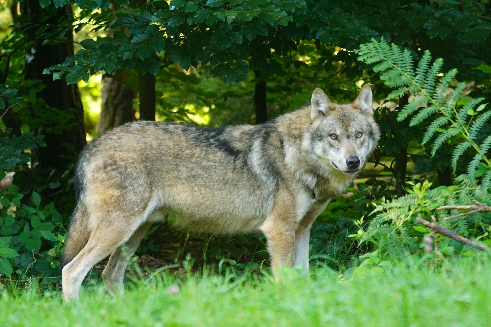

|
"Carnivores Animals"(Wild Animlals) |
| The lion, often referred to as the "king of the jungle," is a majestic big cat known for its strength and social structure. Unlike most other big cats, lions are unique in that they live in groups called prides, which typically consist of related females, their cubs, and a few dominant males. This social structure not only aids in hunting but also provides protection against rival males and other threats. Lions are primarily found in the grasslands and savannas of sub-Saharan Africa, with a small population of Asiatic lions residing in the Gir Forest of India. Physically, lions are impressive creatures, with males weighing between 330 to 550 pounds and females slightly smaller. Their most recognizable feature is the male's magnificent mane, which varies in color and size and serves both as protection during fights and a signal of fitness to potential mates. Lions possess powerful bodies, sharp claws, and strong jaws, making them formidable predators. Their diet primarily consists of large ungulates like zebras and wildebeests, which they hunt using coordinated strategies and teamwork. Despite their iconic status, lions face numerous threats in the wild, including habitat loss, human-wildlife conflict, and poaching. Their populations have been declining, leading to their classification as vulnerable by the International Union for Conservation of Nature (IUCN). Conservation efforts are underway to protect their habitats and ensure sustainable populations, highlighting the importance of preserving these magnificent creatures and the ecosystems they inhabit. Through education and community engagement, there is hope for the future of lions and the intricate balance of life they represent in the wild. |
| Wolves are highly social and intelligent mammals that belong to the Canidae family, which also includes dogs, foxes, and other canids. They are found in various habitats across the Northern Hemisphere, including forests, tundras, grasslands, and deserts. The most well-known species is the gray wolf (Canis lupus), which is known for its adaptability and complex pack dynamics. Wolves typically live and hunt in packs, which consist of a family group that includes a breeding pair and their offspring. This social structure plays a vital role in their survival, allowing them to coordinate hunts and defend their territory effectively. Wolves are fascinating social animals known for their complex social structures and strong pack dynamics. Typically, a wolf pack consists of a family unit, including a breeding pair and their offspring. These packs work collaboratively to hunt for food, defend their territory, and care for their young. Communication within the pack is vital and involves a range of vocalizations, body language, and scent marking, all of which help maintain the social bonds that are crucial for their survival. In terms of habitat, wolves are highly adaptable and can thrive in diverse environments, from forests and tundras to deserts and mountains. They are primarily carnivorous, preying on a variety of animals, including deer, elk, and smaller mammals. Their role as apex predators is essential for maintaining the balance of ecosystems, as they help regulate prey populations and promote healthy habitats. Wolves have also been studied for their hunting strategies, showcasing their intelligence and ability to adapt to different conditions while working as a cohesive group. |
 |
| Sharks are fascinating marine creatures that have inhabited the Earth for over 400 million years, making them one of the oldest species still in existence. With over 500 different species, sharks vary significantly in size, shape, and behavior, ranging from the small dwarf lanternshark, which is just a few inches long, to the massive whale shark, the largest fish in the ocean. They are primarily found in oceans worldwide, thriving in diverse habitats from coastal waters to the deep sea. Sharks are known for their remarkable adaptations, including highly developed senses that make them efficient hunters. Their acute sense of smell allows them to detect blood in the water from miles away, while specialized cells called ampullae of Lorenzini help them sense the electric fields generated by prey. This combination of sensory adaptations, along with their powerful bodies and swift swimming abilities, positions sharks as apex predators in marine ecosystems. They play a crucial role in maintaining the balance of these ecosystems by controlling the populations of other marine species. Despite their importance, many shark species face significant threats due to overfishing, habitat loss, and the demand for shark fins and meat. Conservation efforts are crucial to protect these remarkable animals and their habitats. Public perception of sharks is often influenced by myths and media portrayals, leading to fear and misunderstanding. Education and awareness initiatives can help shift perceptions, highlighting the ecological significance of sharks and the need for their preservation in our oceans. |
| For complane Use These Links: |  |
 |
 |